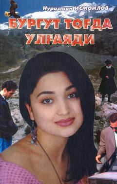

BTTog'larda kechuvchi qiziqarli va sirli sarguzasht-detektiv roman.
Ushbu asar o'tkir sarguzasht-detektiv janrida yozilgan bo'lib, unda jinoyatchilikka qarshi kurash, hayot tashvishlari, ota-onalar va bolalar tarbiyasi hamda ezgulik va yovuzlik o'rtasidagi kurash qiziqarli voqealar orqali ochib berilgan. Asar qahramoni Farruxning tog'dagi hayoti va to'qnash kelgan sirli voqealari kitobxonni e'tiborda ushlab turadi.